Home / Past papers / MLT Quiz 2 / this paper
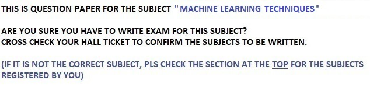
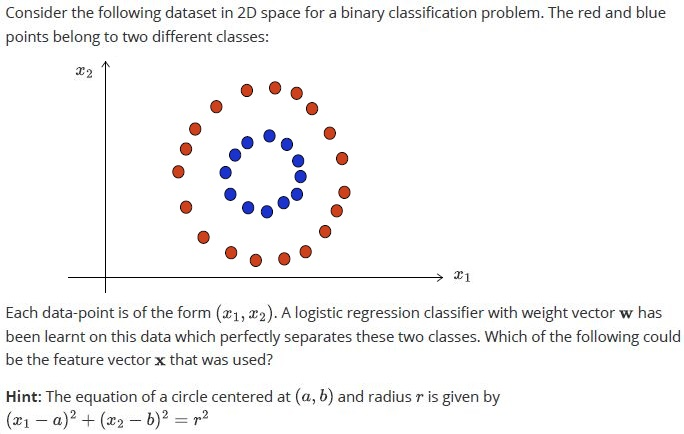
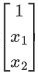
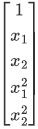
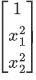
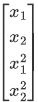
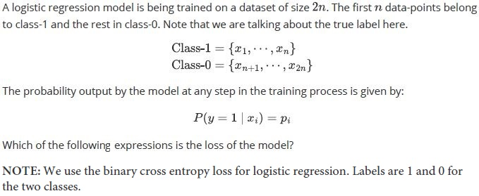
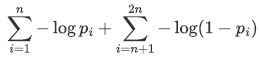
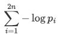
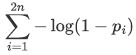
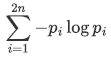
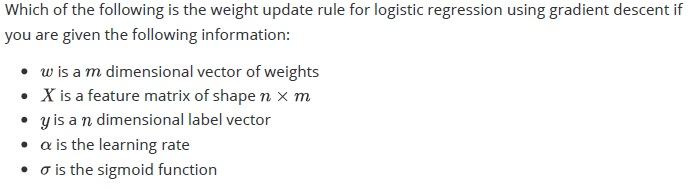
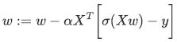
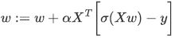
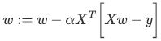
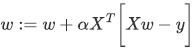
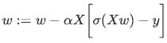
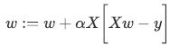
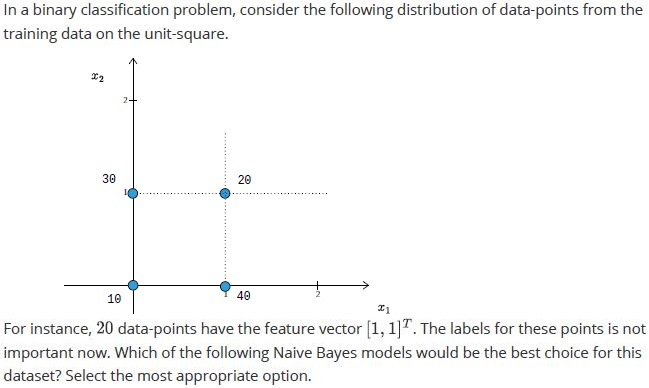
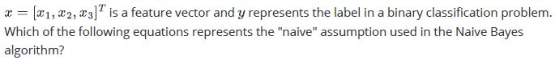
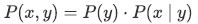
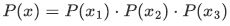
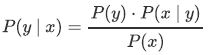
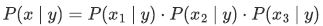
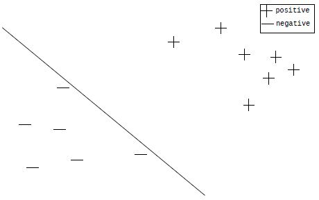
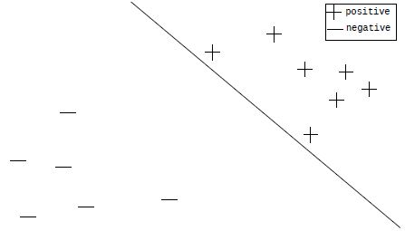
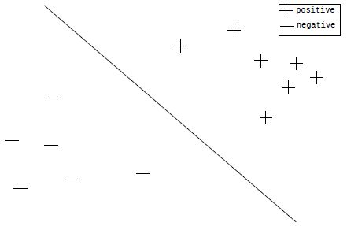
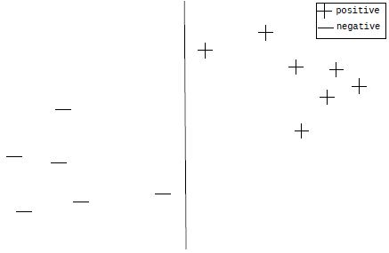
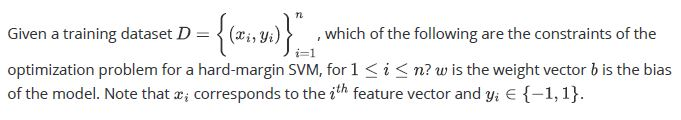
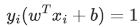
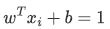
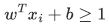
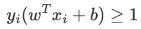
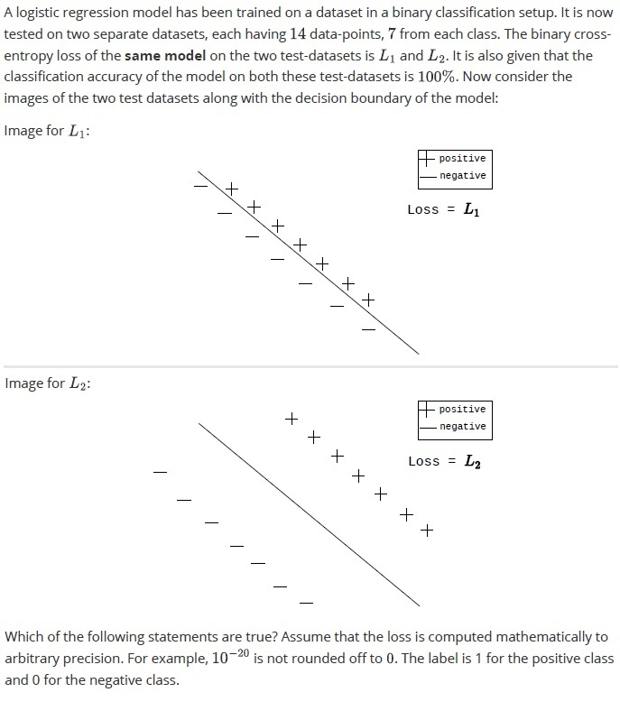
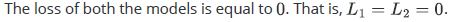
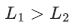
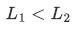
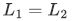
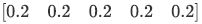
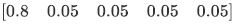
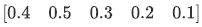
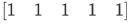
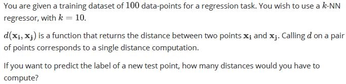
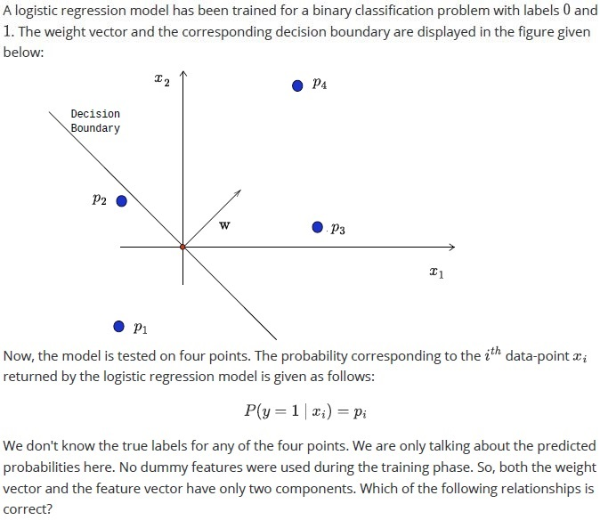
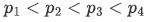
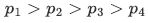
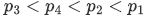
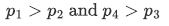
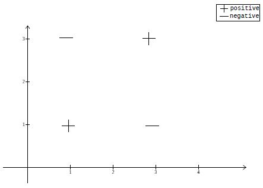
Consider a binary classification task that has 2 features. Assume that we train a soft-margin, linear SVM (decision boundary is a line in 2D space). We know nothing about the distribution of points in the training set. The points need not be linearly separable. This model is now tested on the following dataset that has four points. What are the possible values of the accuracy of the model? All options are independent of each other. Assume that the decision boundary of the model does not pass through any one of the four points.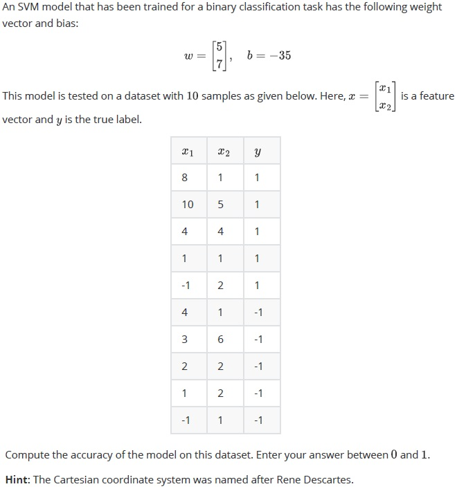